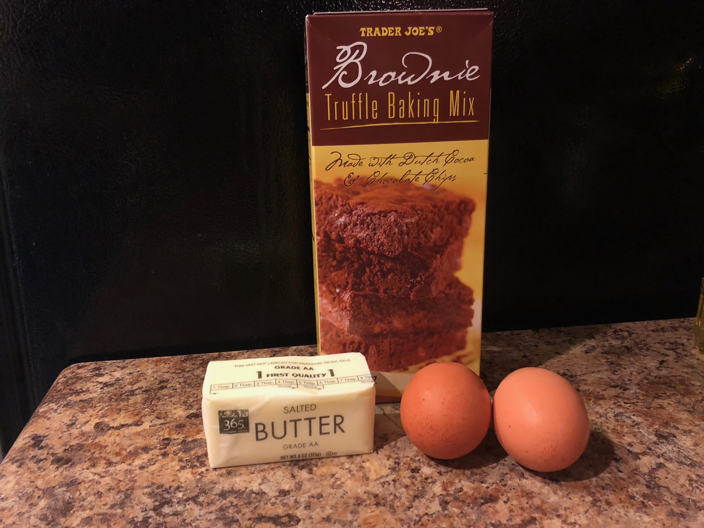
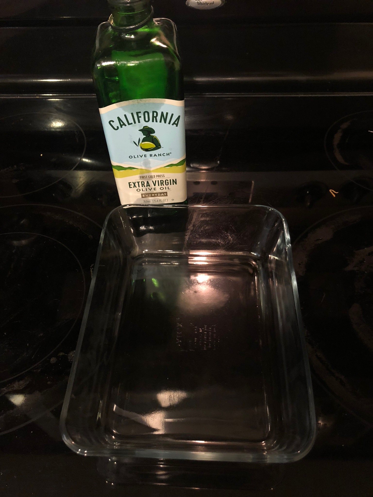
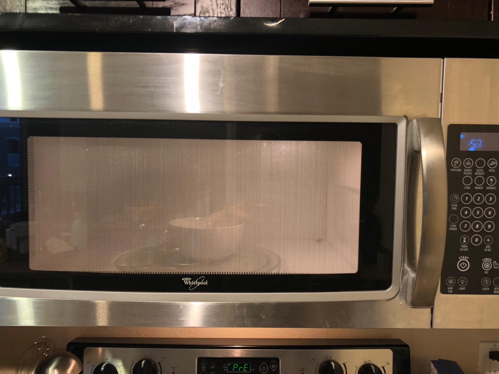
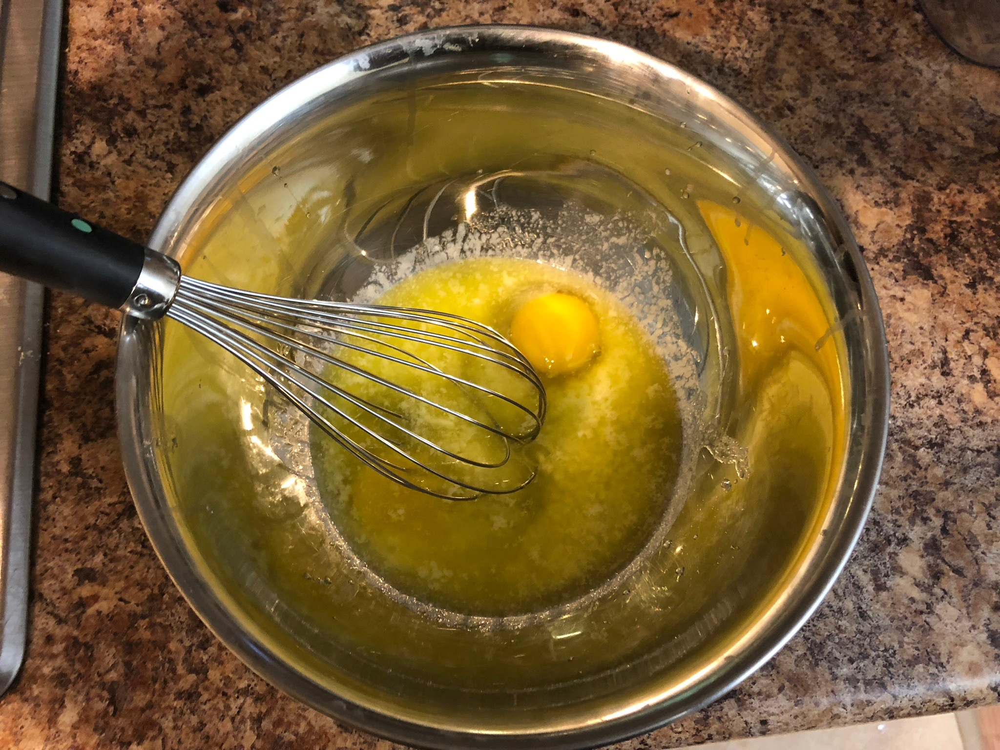
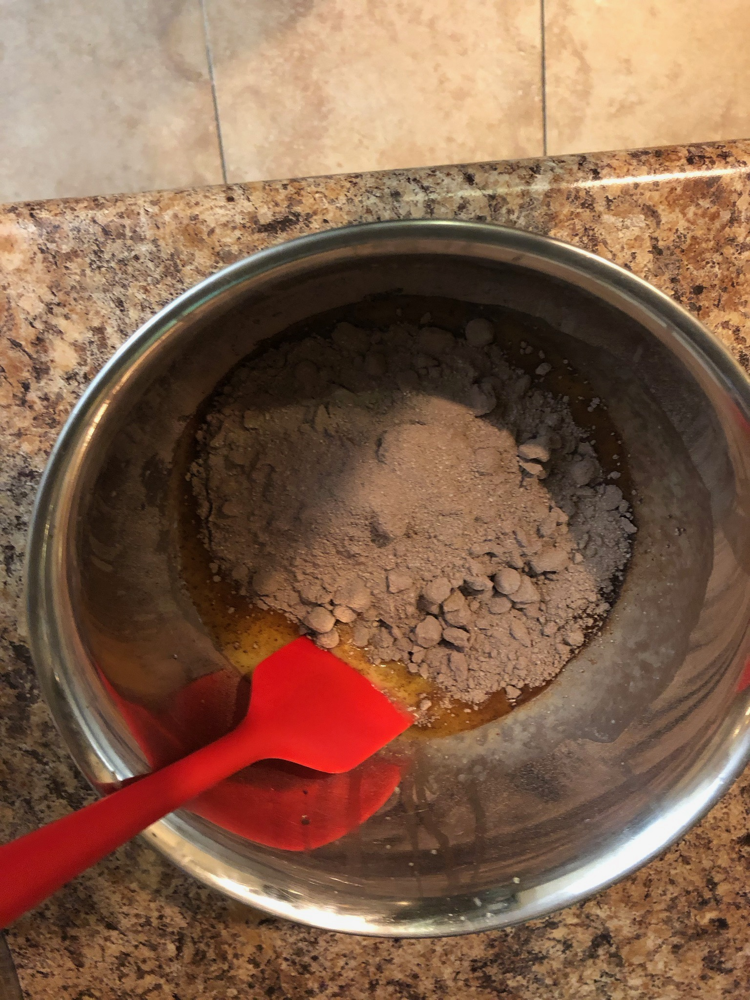
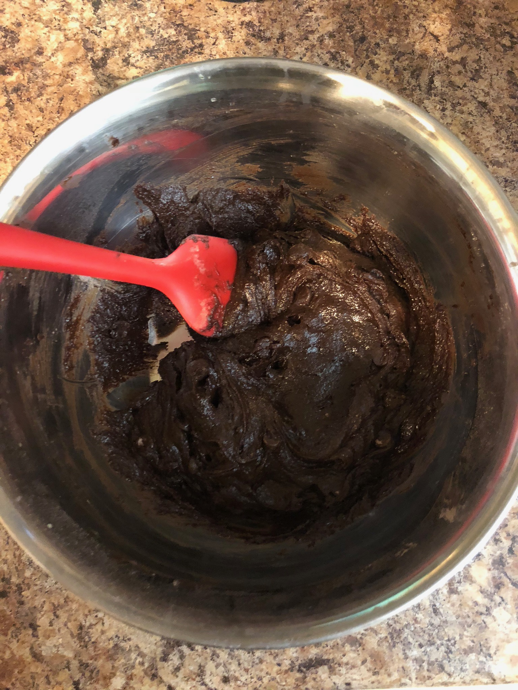
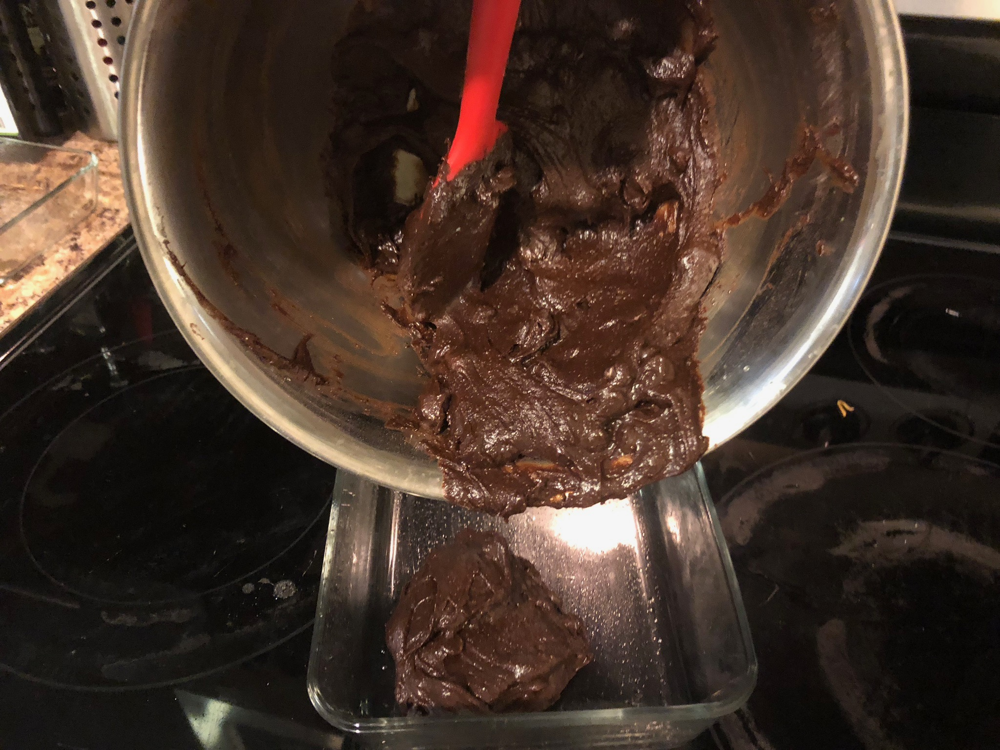
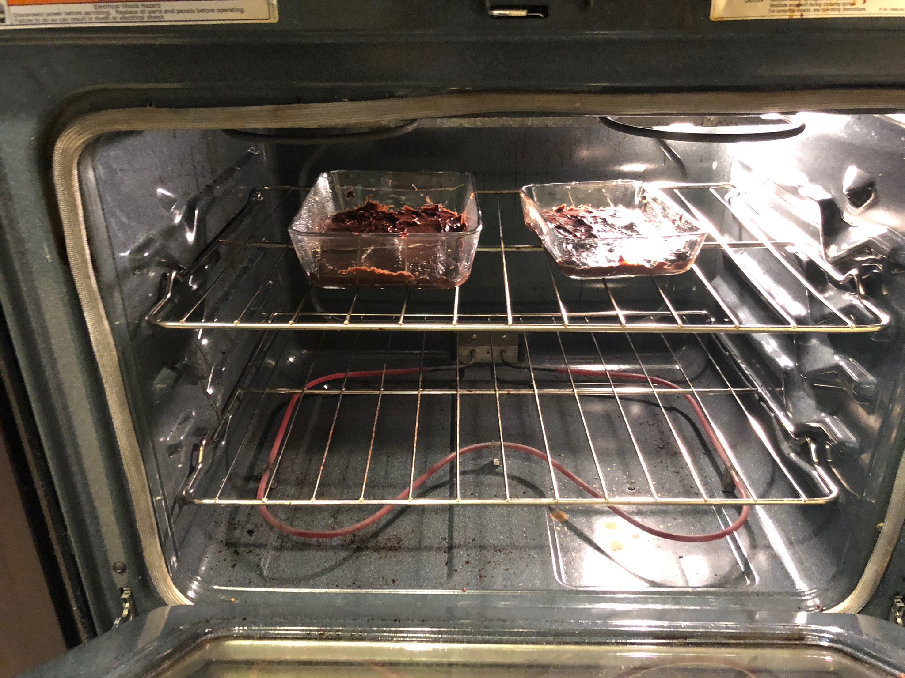
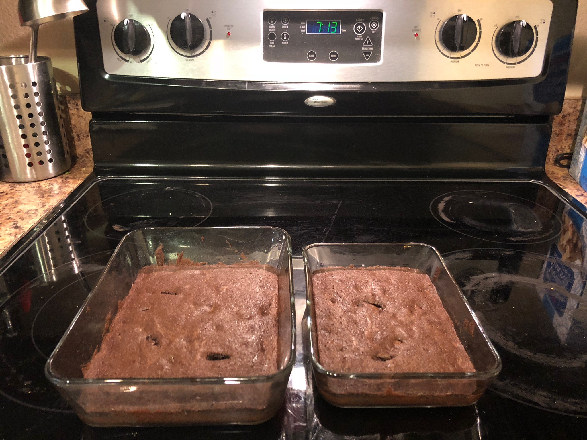

Baking Brownies
Ingredients:
- 1 box of Trader Joe's Brownie Truffle baking mix
- 2 large eggs
- 1 stick of butter

Directions:
- Preheat oven to 350 degrees
- Lightly grease pan with butter or cooking spray

- Melt butter in microwave for 1 minute

- Whisk in eggs until blended

- Add brownie mix

- Mix all ingredients together until thick paste is made

- Spread batter in pan, filling corners

- Bake for 25-30 minutes

- Allow to cool for another 30 mins

- Enjoy!